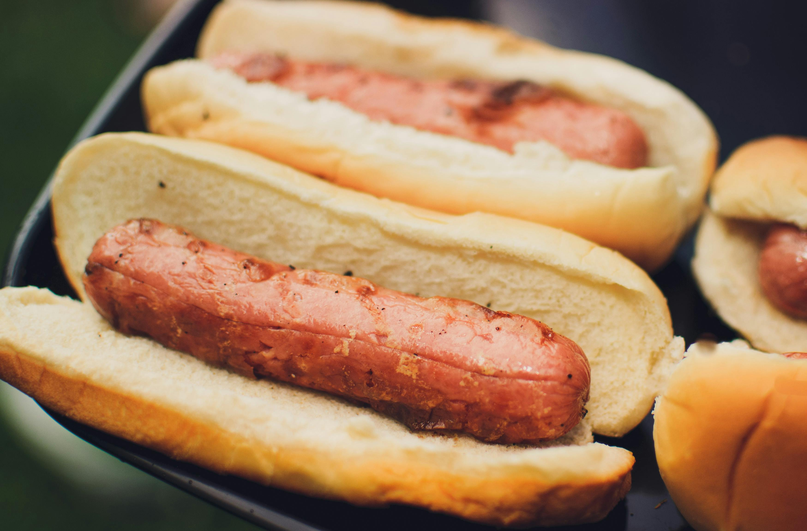

Hotdog

Description
A hotdog is a grilled or steamed sausage served in the slit of a partially sliced bun. It is often garnished with condiments such as mustard, ketchup, onions, mayonnaise, relish, sauerkraut, and cheese.
Ingredients
- 4 hot dog buns
- 4 hot dogs
- 1/2 cup chopped onions
- 1/2 cup relish
- 1/2 cup sauerkraut
- 1/2 cup shredded cheese (optional)
- Mustard and ketchup to taste
Steps
- Preheat your grill or stove top pan to medium heat.
- Place the hot dogs on the grill or pan and cook for about 5-7 minutes, turning occasionally, until they are heated through and have grill marks.
- While the hot dogs are cooking, you can toast the buns on the grill for about 1-2 minutes until they are lightly browned.
- Once the hot dogs are cooked, place each one in a bun.
- Add your desired toppings such as chopped onions, relish, sauerkraut, and shredded cheese.
- Finish with mustard and ketchup to taste.
- Serve immediately and enjoy your delicious hotdog!
Back to Home